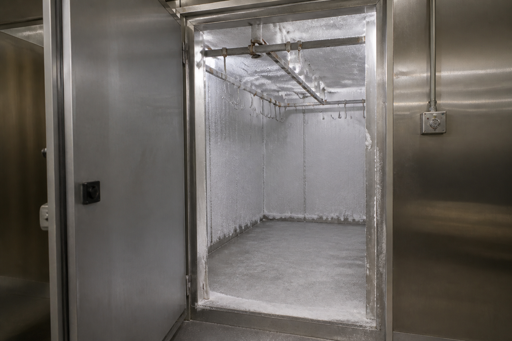

Commercial Refrigeration Engineers North London - 24/7 Emergency
Upright and chest freezers for kitchens, shops and catering. 24/7 emergency when frozen stock is at risk.
Commercial freezer repair is a race against thaw. Ice cream, frozen chips, meat, pastry and ice all leave the safe zone faster than most managers expect once an upright or chest freezer stops pulling down. A restaurant or takeaway that loses a loaded freezer on a Saturday loses the weekend. A supermarket or convenience store that loses a glass-door freezer loses a bay of sales and a waste write-off.
Cold Direct repairs commercial freezers only. We are North London Commercial Refrigeration Engineers covering a 25 mile radius across London, Hertfordshire and Essex. Sites we attend include restaurants, pubs, bars, shops, takeaways, hotels and supermarket back-of-house. We work on Williams, Foster, True, Polar, Blizzard, Gram, Lec, Hoshizaki, Snomaster and Tefcold freezers, plus most other trade brands if the model plate is readable.
Common faults: the cabinet is in defrost and never comes out; the lid seal on a chest freezer is split; frost has blocked the evaporator; the condenser is packed with flour and grease from a takeaway; the compressor is hot and clicking; the digital controller shows an error and the fans are still. We defrost only when it is safe and necessary, we never chip an evaporator with a knife, and we test pull-down before we leave so you know the unit will hold overnight.
If you run a busy line in Westminster, the City, Camden or Islington, you already know that “we will try next week” is not a plan. The same is true for shops in Stratford, Ilford, Romford and Walthamstow, and for kitchens in Barnet, Finchley, Harrow, Watford and St Albans. Call the mobile after midnight. Call freephone from the office. Call the London office for a planned multi-site visit. All three numbers are printed in the header and footer on every page so staff can find one without hunting.
We quote before we start. If the freezer is beyond economic repair we will tell you while you still have time to move stock into another cabinet or a hired unit. If a fan motor, heater or controller will save the load, we fit it on the first visit when the part is on the van. First-visit fixes are the aim because a second visit on frozen food is always more expensive than the part.
Do not keep opening the door to “check if it is still frozen”. Cover the load, keep the door shut, and phone. We will tell you whether to transfer stock now or hold until the engineer arrives. That one instruction saves more product than any later repair.

Williams, Foster, True, Hoshizaki, Polar, Blizzard, Gram, Lec, Snomaster, Tefcold.
North London, Enfield, Barnet, Finchley, Wood Green, Tottenham, Edmonton, Walthamstow, Chingford, Southgate, Palmers Green, Winchmore Hill, Cockfosters, Potters Bar, Borehamwood, Camden, Islington, Hackney, Haringey, City of London, Westminster, Harrow, Watford, St Albans, Cheshunt, Waltham Cross, Harlow, Ilford, Romford, Stratford, All London (25 mile radius North London).